Direct answer: For UK viewers, the strongest picks in ReelOpal's data are the official UK Apple TV movie chart (snapshot 16 Nov 2026, led by Pressure) plus the Netflix Top 10 snapshot for series. If you searched for the best movies on Netflix UK November 2026, start with the chart below, then the Netflix Top 10 — remembering it is a TVMaze-popularity snapshot, not Netflix's official UK chart.
Updated: 16 Nov 2026 · UK chart data: Apple UK store, snapshot 16 Nov 2026.
UK Movie Chart — this week's titles
UK chart #3
Pressure
2026 · Movie
Drama
In the 72 hours before D-Day, and with the fate of the free world hanging in the balance, General Dwight D. Ei
UK chart #8
Savage House
2026 · Movie
Comedy
In 18th-century England, Savage House follows Sir Chauncey Savage (Richard E. Grant), a gloriously unscrupulou
UK chart #11
Sense & Sensibility
2026 · Movie
Drama
An irresistible new take on Jane Austen's iconic Sense & Sensibility, this sweeping and deeply relatable story
UK chart #12
Obsession
2026 · Movie
Horror
After breaking the mysterious "One Wish Willow" to win his crush’s heart, a hopeless romantic finds himself ge
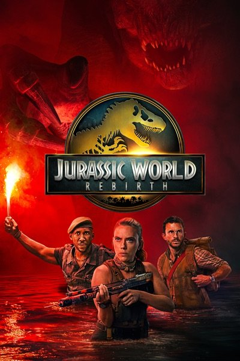
UK chart #15
Jurassic World: Rebirth
2025 · Movie
Action & Adventure
After the Jurassic World trilogy concluded with each film surpassing $1 billion at the global box office, the
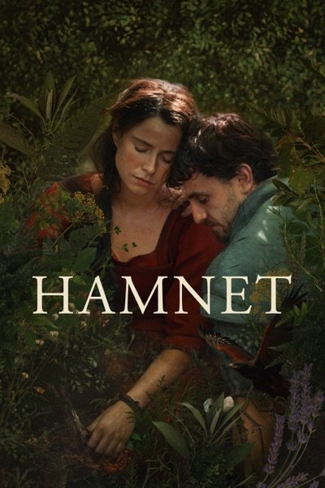
UK chart #18
Hamnet
2026 · Movie
Drama
Hamnet tells the powerful story of love and loss that inspired the creation of Shakespeare's timeless masterpi
UK chart #20
Tuner
2026 · Movie
Thriller
In Tuner, Academy Award-winning director Daniel Roher's first narrative feature, Leo Woodall stars as a gifted
UK chart #21
Normal
2026 · Movie
Action & Adventure
For Sheriff Ulysses (Bob Odenkirk), a new job in the quaint Midwestern town of Normal was meant to be a welcom
UK chart #24
Elf
2003 · Movie
Comedy
One Christmas Eve a long time ago, a baby crawled into Santa's bag of toys... Raised as an elf, Buddy grows in
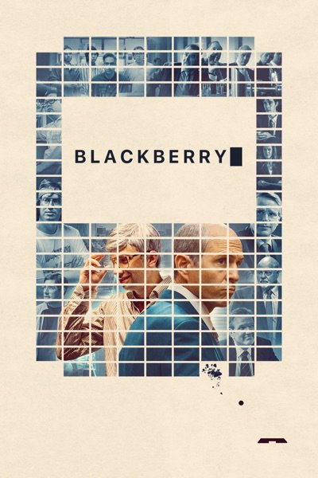
UK chart #25
BlackBerry
2023 · Movie
Comedy
‘BlackBerry’ tells the story of Mike Lazaridis and Jim Balsillie, the two men that charted the course of the s
UK chart #26
The Inbetweeners Movie 2
2014 · Movie
Comedy
The Inbetweeners 2 reunites Jay, Neil, Simon and Will for their latest critically acclaimed smash-hit comedy a
UK chart #27
Extra Geography
2026 · Movie
Independent
Set in an English boarding school, 'Extra Geography' follows two teenage girls as they grapple with all the ch
UK chart #28
Moneyball
2011 · Movie
Drama
Oakland A's general manager Billy Beane (Brad Pitt) challenges the system and defies conventional wisdom when
UK chart #29
Dune: Part Two
2024 · Movie
Action & Adventure
Dune: Part Two explores the mythic journey of Paul Atreides as he unites with Chani and the Fremen while on a
UK chart #30
Dune
2021 · Movie
Sci-Fi & Fantasy
A mythic and emotionally charged hero’s journey, “Dune” tells the story of Paul Atreides, a brilliant and gift
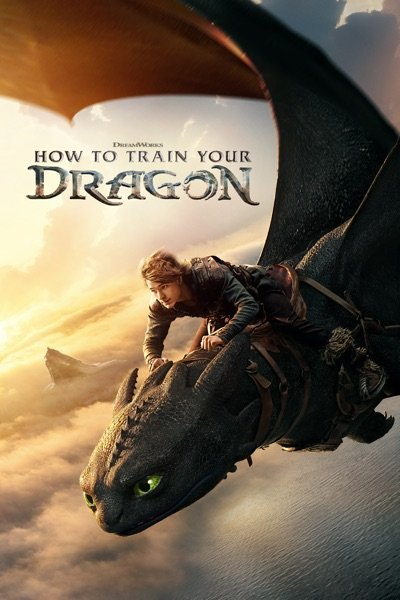
UK chart #32
How To Train Your Dragon
2025 · Movie
Action & Adventure
From three-time Oscar nominee and Golden Globe winner Dean DeBlois, the creative visionary behind DreamWorks A
UK chart #33
Synchronic
2020 · Movie
Sci-Fi & Fantasy
From breakout genre filmmakers Justin Benson and Aaron Moorhead (The Endless) Synchronic is a mind-bending, ha
UK chart #34
Vice Versa
1988 · Movie
Comedy
Marshall Seymour is an Executive Vice President for one of Chicago's most prestigious department stores. He is
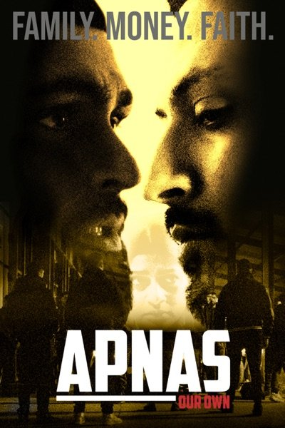
UK chart #35
Apnas
2026 · Movie
Drama
Set on the gritty streets of Manchester, 'Apnas' follows a British Asian pulled into a dangerous criminal worl
UK chart #39
Michael
2026 · Movie
Drama
Michael is the cinematic portrayal of the life and legacy of one of the most influential artists the world has
UK chart #40
Arrival
2016 · Movie
Sci-Fi & Fantasy
When mysterious spacecraft touch down across the globe, an elite team– led by expert linguist Louise Banks (Am
UK chart #41
Rise of the Footsoldier: Retribution
2026 · Movie
Action & Adventure
Following a record-breaking theatrical release, Pat Tate returns in his most explosive mission yet. Heading to
UK chart #42
Me Before You
2016 · Movie
Romance
Young and quirky Louisa "Lou" Clark (Emilia Clarke) moves from one job to the next to help her family make end
UK chart #43
Harry Potter and the Philosopher's Stone
2001 · Movie
Kids & Family
Based on the first of J.K. Rowling's popular children's novels about Harry Potter, the live-action family adve
UK chart #44
In Bruges
2008 · Movie
Comedy
Colin Farrell and Academy Award-nominee Ralph Fiennes star in this edgy, action-packed comedy, filled with thr
UK chart #46
The Hunger Games
2012 · Movie
Action & Adventure
Based on the best-selling books by Suzanne Collins, The Hunger Games is the first film in the franchise. Every
UK chart #47
The Hunger Games: Mockingjay - Part 1
2014 · Movie
Action & Adventure
Katniss Everdeen (Jennifer Lawrence), is rescued by the rebels and brought to District 13 after she shatters t
UK chart #48
The Sheep Detectives
2026 · Movie
Comedy
After their farmer dies under strange circumstances, a flock of sheep sets out to solve the mystery, leaving t
UK chart #49
The Hunger Games: Catching Fire
2013 · Movie
Action & Adventure
Academy Award® winner Jennifer Lawrence returns as Katniss Everdeen in this thrilling second adventure from TH
UK chart #50
The Death of Robin Hood
2026 · Movie
Drama
Grappling with his past after a life of crime and murder, a battle-worn loner lives as a recluse, masking his
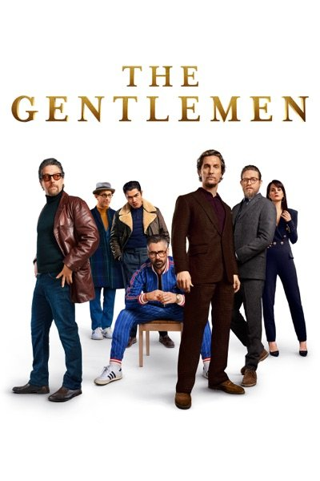
UK chart #51
The Gentlemen
2020 · Movie
Action & Adventure
THE GENTLEMEN follows American expat Mickey Pearson (Matthew McConaughey) who built a highly profitable mariju
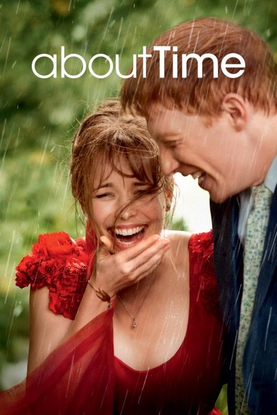
UK chart #52
About Time
2013 · Movie
Comedy
At the age of 21, Tim is told an incredible family secret by his father: all the men in his family have the ab
UK chart #53
Room on the Broom
2012 · Movie
Kids & Family
A kind witch ignores the concerns of her long-suffering companion, a wonderful Cat, and invites more and more
UK chart #54
Conclave
2024 · Movie
Thriller
Following the death of the Pope, the reluctant Cardinal Lawrence is tasked with overseeing the group of Cardin
UK chart #55
Someone to Watch Over Me
1988 · Movie
Thriller
A stunning New York socialite and a down-to-earth city cop are caught in a deadly web of illicit passion and h
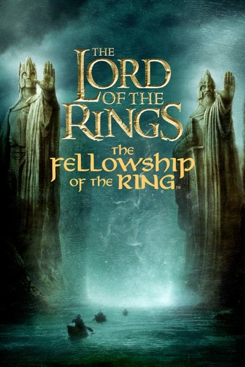
UK chart #56
The Lord of the Rings: The Fellowship of the Ring
2001 · Movie
Action & Adventure
"One ring to rule them all. One ring to find them. One ring to bring them all and in the darkness bind them."
UK chart #58
Black Phone 2
2025 · Movie
Horror
True evil transcends death and the black phone rings again as The Grabber torments Finn, the teen who killed h
UK chart #59
Touch Me
2026 · Movie
Sci-Fi & Fantasy
Two best friends become addicted to the heroin-like touch of an alien narcissist who is trying to take over th
UK chart #61
Terminator 2: Judgment Day
1997 · Movie
Action & Adventure
Arnold Schwarzenegger returns as the Terminator in this explosive action-adventure spectacle. Now he's one of
UK chart #62
Finding Emily
2026 · Movie
Romance
When a lovesick musician is given the wrong number for his dream girl, he teams up with a struggling psycholog
UK chart #63
Evil Dead Burn
2026 · Movie
Horror
After the loss of her husband, a woman seeks solace with her in-laws in their secluded family home. One by one
UK chart #64
Pride & Prejudice
2005 · Movie
Romance
One of the greatest love stories of all time, Pride & Prejudice, comes to the screen in a glorious new adaptat
UK chart #65
Bottle Rocket
2009 · Movie
Comedy
Newcomer Owen Wilson, in a star-making performance, co-wrote the screenplay about three best friends who attem
UK chart #66
Rocky
1976 · Movie
Drama
Rocky Balboa is a struggling Philadelphia boxer who is scorned by his gym's owner, patronized by a loan shark
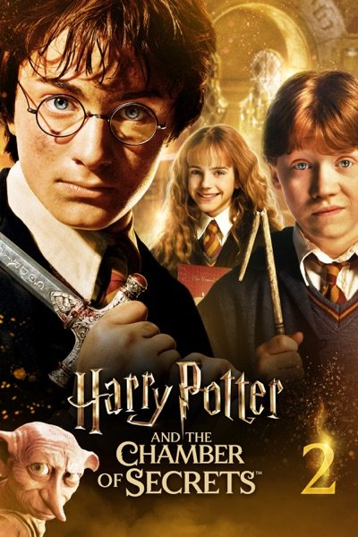
UK chart #67
Harry Potter and the Chamber of Secrets
2002 · Movie
Kids & Family
Harry Potter's adventures continue... After a long summer with the horrid Dursleys, Harry Potter is thwarted i
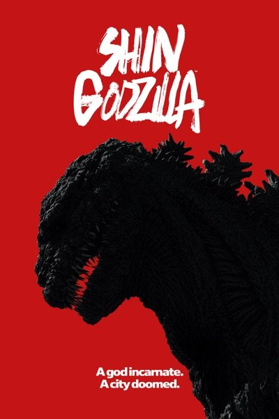
UK chart #70
Shin Godzilla
2017 · Movie
Action & Adventure
Japan is plunged into chaos upon the appearance of a giant monster.
UK chart #71
Violent Night
2022 · Movie
Action & Adventure
A team of mercenaries breaks into a mansion on Christmas Eve, but they are not ready for a surprise combatant:
UK chart #73
The Hunger Games: Mockingjay - Part 2
2015 · Movie
Action & Adventure
With the nation of Panem in a full-scale war, Katniss confronts President Snow [Donald Sutherland] in the fina
UK chart #74
Oppenheimer
2023 · Movie
Drama
Experience the breathtaking global phenomenon that has captivated audiences around the world. Written for the
UK chart #75
Wicked: For Good
2025 · Movie
Drama
The epic conclusion to the untold story of the witches of Oz begins. Elphaba, demonized as The Wicked Witch of
UK chart #76
Love Actually
2003 · Movie
Romance
Love Actually is the ultimate romantic comedy. Funny, irresistible and heartwarming, an all-star cast (Hugh Gr
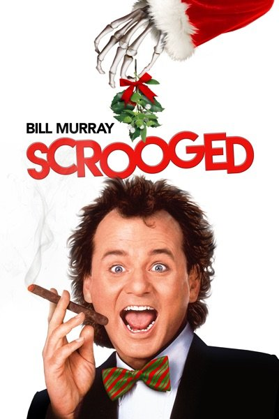
UK chart #77
Scrooged
1988 · Movie
Holiday
A network TV president is perhaps the most cold-hearted man ever, but his holiday spirit is given a painful bo
Popular Series for UK Viewers
The Netflix Top 10 snapshot ranking (TVMaze-popularity, 16 Nov 2026 — not Netflix's official chart):
1
Netflix #1
Black Mirror
2011 · Netflix series · ★ 8.4
Drama
Over the last ten years, technology has transformed almost every aspect of our lives before we've had time to
2
Netflix #2
Arrested Development
2003 · Netflix series · ★ 8.2
Comedy
After being passed over as partner at The Bluth Co., widower Michael resolves to quit the family business and
3
Netflix #3
House of Cards
2013 · Netflix series · ★ 8.2
Drama
Based on the BBC miniseries of the same name, House of Cards follows Francis Underwood, the politician's polit
4
Netflix #4
Longmire
2012 · Netflix series · ★ 8.3
Drama
Longmire , a contemporary crime thriller set in Big Sky country, is based on the Walt Longmire Mystery novels
5
Netflix #5
Orange Is the New Black
2013 · Netflix series · ★ 7.9
Drama
Orange Is the New Black is the story of Piper Chapman, a woman in her thirties who is sentenced to fifteen mon
6
Netflix #6
WWE Monday Night RAW
1993 · Netflix series · ★ 7.4
Drama
WWE Monday Night RAW is World Wrestling Entertainment's (formerly the WWF and the WWWF before that) premiere w
7
Netflix #7
Power Rangers
1993 · Netflix series · ★ 6.5
Action
Power Rangers is a children's television series adapted from the Japanese tokusatsu Super Sentai Series. A tea
8
Netflix #8
BoJack Horseman
2014 · Netflix series · ★ 7.9
Drama
Meet the most beloved sitcom horse of the '90s, 20 years later. He's a curmudgeon with a heart of... not quite
9
Netflix #9
Marco Polo
2014 · Netflix series · ★ 8.0
Drama
In a world replete with greed, betrayal, sexual intrigue and rivalry, Marco Polo is based on the famed explore
10
Netflix #10
Lovesick
2014 · Netflix series · ★ 7.3
Comedy
An infectious comedy series following the disastrous exploits of 20-something romantic Dylan, who plans to use
UK Viewers — Questions
What are the best movies on Netflix UK in November 2026?
ReelOpal answers from its own data: the UK Apple TV chart in the 16 Nov 2026 snapshot is led by Pressure, and the Netflix Top 10 snapshot page ranks the most popular Netflix series. Netflix's UK catalogue differs from the US one, and ReelOpal's Top 10 is a TVMaze-popularity snapshot — not Netflix's official UK chart.
How is the UK chart different from the US chart?
The UK chart comes from Apple's UK iTunes store and the US chart from the US store, so titles, order and prices (GBP vs USD) differ. ReelOpal labels every movie with its region.
Where can UK viewers watch these titles legally?
UK-chart movies link to their official Apple TV UK store page. For series, open the title page for the network and official links, and check availability signed in to your UK account.
Sponsored · Smartlink
Today's Smart Pick
One link, matched to your country — the trending movie, series & streaming offer for US & Europe viewers right now.
Opens in a new tab — ReelOpal stays right here
Matched to your country by our ad partner
Opens in a new tab — no account, no ReelOpal sign-up
 UK chart #3
UK chart #3 UK chart #8
UK chart #8 UK chart #12
UK chart #12 UK chart #20
UK chart #20 UK chart #21
UK chart #21 UK chart #24
UK chart #24 UK chart #26
UK chart #26 UK chart #28
UK chart #28 UK chart #29
UK chart #29 UK chart #33
UK chart #33 UK chart #34
UK chart #34 UK chart #39
UK chart #39 UK chart #40
UK chart #40 UK chart #41
UK chart #41 UK chart #42
UK chart #42 UK chart #43
UK chart #43 UK chart #44
UK chart #44 UK chart #46
UK chart #46 UK chart #47
UK chart #47 UK chart #48
UK chart #48 UK chart #49
UK chart #49 UK chart #50
UK chart #50 UK chart #54
UK chart #54 UK chart #55
UK chart #55 UK chart #58
UK chart #58 UK chart #61
UK chart #61 UK chart #62
UK chart #62 UK chart #63
UK chart #63 UK chart #64
UK chart #64 UK chart #65
UK chart #65 UK chart #71
UK chart #71 UK chart #73
UK chart #73 UK chart #74
UK chart #74 UK chart #75
UK chart #75 UK chart #76
UK chart #76 Netflix #1
Netflix #1 Netflix #2
Netflix #2 Netflix #3
Netflix #3 Netflix #4
Netflix #4 Netflix #5
Netflix #5 Netflix #6
Netflix #6 Netflix #7
Netflix #7 Netflix #8
Netflix #8 Netflix #10
Netflix #10